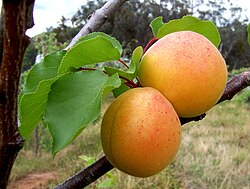

Meruňka obecná (Prunus armeniaca, synonymum Armeniaca vulgaris) je strom z rozsáhlého rodu slivoň (Prunus), kam patří také broskvoň, třešeň nebo švestka. Původ Pochází z Číny. Do Evropy se dostala přes Arménii počátkem letopočtu, do Česka se rozšířila z Itálie přes Slovinsko, Štýrsko a Rakousy. Arménský původ obsahuje její latinský název armenica, z něhož pochází i české slovo meruňka. Na Moravě marhole(a), v některých oblastech slovácka i marhule(a). Doba rozšíření na naše území, nejprve na Moravu není zcela jistá. Jistá možnost je již v 1. století, a to z Rakouska, pravého břehu Dunaje.[2] Pěstební podmínky jsou na Moravě příhodné a dodnes je 80–85 % meruňkových sadů právě na Moravě, proto má výnos meruněk silný odraz v moravské kuchyni. V Čechách jsou nejvýznamnější areály na Litoměřicku. Květy meruňky Plody Plody meruňky jsou peckovice s oranžovým oplodím. Kvete na loňských letorostech. Dozrávají většinou uprostřed léta. Konzumují se buď v čerstvém stavu, zavařené či v podobě džemu nebo marmelády, jež jsou velmi oblíbené pro kyselosladkou chuť a příjemnou vůni, oblíbené jsou i sušené meruňky. Dobře vyzrálé až přezrálé plody se sbírají na kvas, z nějž se destiluje alkoholický nápoj – meruňkovice. Jednotlivé plody různých odrůd mají hmotnost 40–90 gramů. Pěstuje se v oblastech s mírnou zimou, v Česku jen ve vinorodných krajích. Nejlepší meruňkové polohy jsou na jižní Moravě, jihozápadním a východním Slovensku, v nadmořské výšce do 250 m, s průměrnou roční teplotou nad 8,5 °C a úhrnem ročních srážek 550 mm; musí být chráněny před pronikáním chladných větrů. Meruňky lze úspěšně pěstovat na černozemích, popřípadě na hnědozemích, v hlinitých až písčitohlinitých půdách v kukuřičném, výjimečně v řepařském výrobním typu. Pro těžší půdy jsou vhodnější generativně množené podnože s bujnějším růstem; meruňkové semenáče, dokonce i některé podnože slivoní (renklóda, špendlík žlutý). Má krátkou dormanci, velmi jí škodí jarní mrazy během kvetení a náhlé silné mrazy v předjaří, během rašení, kdy může dojít k vážným škodám zejména na osluněné části kmene a větví. Během běžné zimy snáší dobře i podstatně nižší teploty než broskev. Na chladné jarní počasí kolem 0 °C jsou citlivé hlavně květy a mladé plůdky. Nejrozšířenější je v Česku odrůda Velkopavlovická, s poměrně velkými plody výborné kvality. Je však citlivá na jarní mrazy a houbové choroby. V poslední době se zkouší nově vyšlechtěné, odolnější odrůdy. Další odrůdy meruněk jsou například: Bergeron, Karola, Goldrich, Hargrand nebo Maďarská. Nebezpečnost jadérek Vzhledem k obsahu kyanogenního glykosidu amygdalinu v meruňkových jádrech by dospělí mohli sníst asi 3 malá jadérka, aniž by překročili bezpečnou dávku stanovenou EFSA, v případě malých dětí může stačit i polovina jadérka.[3]